第八章 DMA
8.1 DMA¶
8.1.1 DMA简介¶
- DMA（Direct Memory Access）直接存储器存取
- DMA可以提供外设和存储器或者存储器和存储器之间的高速数据传输，无须CPU干预，节省了CPU的资源
- 12个独立可配置的通道： DMA1（7个通道）， DMA2（5个通道）
- 每个通道都支持软件触发和特定的硬件触发
STM32F103C8T6 DMA资源：DMA1（7个通道）
Note
外设和存储器之间的数据转运一般使用硬件触发，比如AD转换完成后触发；而存储器和存储器之间数据转运一般使用软件触发，可以快速的把数据转运到想要的位置。注意这里的外设指数据寄存器，如ADC的数据寄存器；存储器指Flash和SRAM
8.1.2 存储器映像¶
| 类型 | 起始地址 | 存储器 | 用途 |
|---|---|---|---|
| ROM | 0x0800 0000 | 程序存储器Flash | 存储C语言编译后的程序代码 |
| ROM | 0x1FFF F000 | 系统存储器 | 存储BootLoader，用于串口下载 |
| ROM | 0x1FFF F800 | 选项字节 | 存储一些独立于程序代码的配置参数 |
| RAM | 0x2000 0000 | 运行内存SRAM | 存储运行过程中的临时变量 |
| RAM | 0x4000 0000 | 外设寄存器 | 存储各个外设的配置参数 |
| RAM | 0xE000 0000 | 内核外设寄存器 | 存储内核各个外设的配置参数 |
8.1.3 DMA框图¶
- AHB从设备 ，用于配置DMA参数
- 仲裁器 ，DMA内部的仲裁用于给内部通道配置优先级，总线矩阵也是一个仲裁器，用于处理CPU和DMA任务冲突
- DMA的内部通道 ，DMA1有 7 个， DMA2有 5 个
- Flash ，CPU和DMA直接访问Flash只能读而不能写，要写入数据需要使用Flash接口控制器
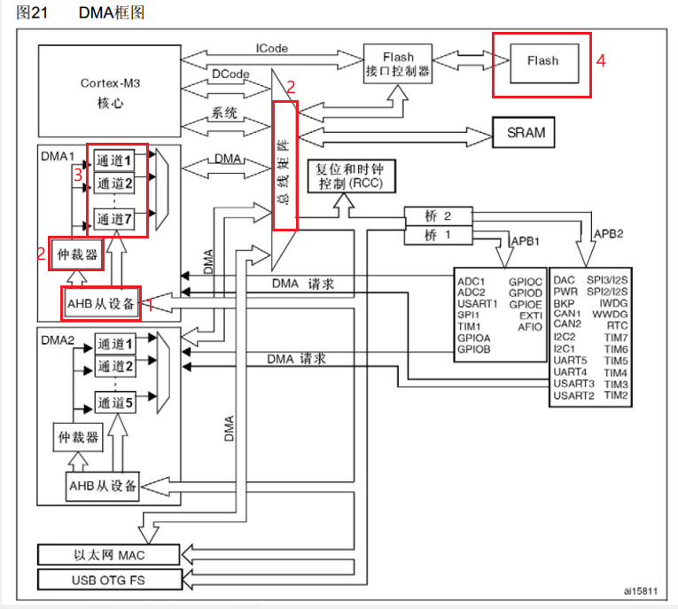
8.1.4 DMA基本结构¶
- 触发模式 ，M2M置 1 为软件触发，置 0 为硬件触发。
- 传输计数器 ，每触发一次，传输计数器减一，当传输计数器为 0 时，即使触发转运，也不会再发生数据转运。
- 自动重装器 ，当传输计数器减至 0 ，会自动重装，即循环模式；与ADC的连续模式类似，配合ADC扫描模式使用。
- 外设与存储器 ，进行数据转运需要的三个参数，即起始地址、数据宽度、地址是否自增。
Danger
软件触发和循环模式不要同时使用，因为软件触发不需要时机， 旨在快速将传输计数器清零 ，而循环模式是 清零后自动重装 ，两者逻辑叠加，DMA便会一直进行无法停止。另外，在写入传输计数器之前，需要DMA暂停工作。
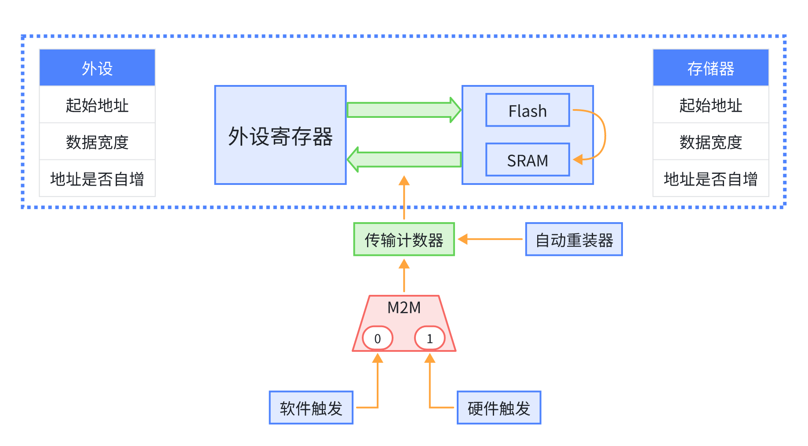
8.2 DMA请求与数据宽度¶
8.2.1 DMA请求映像¶
Note
仅关注各通道的外设请求信号，后部分信号看DMA基本结构图更好理解。
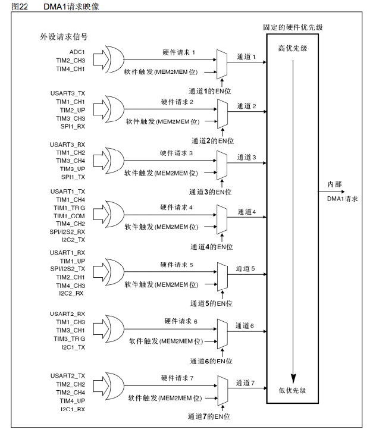
8.2.2 数据宽度与对齐¶
总的来说，表格的意思就是：
- 小的数据转到大的里面，高位补零
- 大的数据转到小的里面，高位舍弃
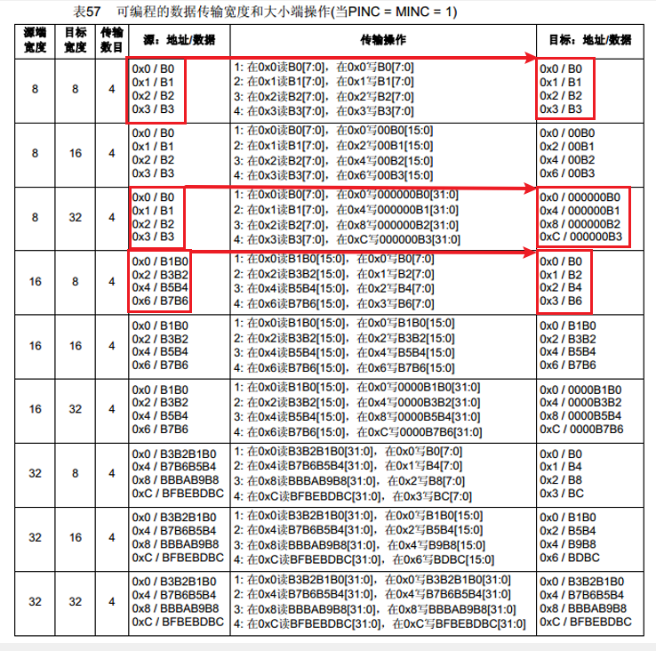
8.3 STM32CubeMX参数¶
关于数据宽度分为 字(Word) 、 半字(Half Word) 、 字节(Byte)。另外，“Increment Address” 指地址是否自增。
Waring
我们应了解，一个二进制位是一个 比特位(Bit) ，一个 字节(Byte) 是 8 个Bit。而 字(Word) 取决于处理器，例如：对于32位的单片机，一个 字(Word)即为 32 Bit(四个字节)，半字就是 16 Bit(两个字节)。

8.4 工程配置¶
8.4.1 存储器到存储器¶
- 配置一个DMA通道，勾选地址自增和数据宽度为字节
- 配置UART输出数据
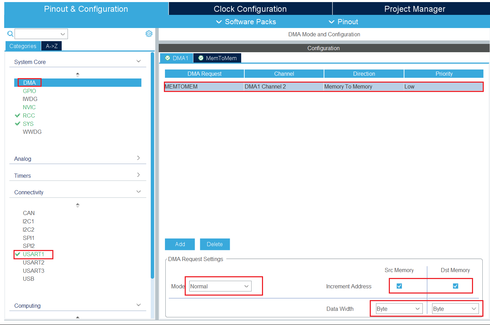
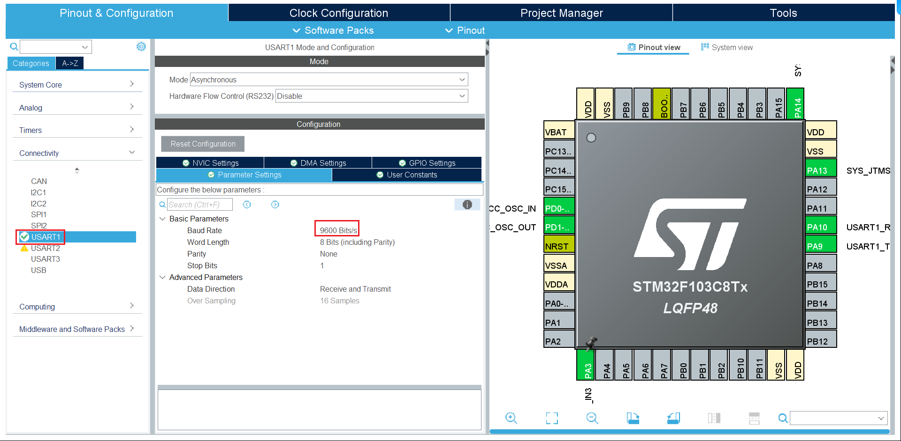
定义测试数组为全局变量
/* USER CODE BEGIN PV */
uint8_t DataA[4] = {0x01, 0x02, 0x03, 0x04}; //定义测试数组DataA
uint8_t DataB[4] = {1, 1, 1, 1}; //定义测试数组DataB
/* USER CODE END PV */
Danger
这里数据类型必须为uint8_t ，因为uint8_t正好是一个字节
建立一个DMA转运函数，将转运数组和目标数组填进去，最后一个参数是数据长度为 4
/* USER CODE BEGIN 0 */
void MyDMA_Transfer(void) {
HAL_DMA_Start(&hdma_memtomem_dma1_channel2, (uint32_t)DataA, (uint32_t)DataB, 4);
HAL_DMA_PollForTransfer(&hdma_memtomem_dma1_channel2, HAL_DMA_FULL_TRANSFER, HAL_MAX_DELAY);
}
/* USER CODE END 0 */
串口发送缓冲区
主循环代码 ，转换数组自增，调用转换函数，串口发送转换前后的数据
/* USER CODE BEGIN WHILE */
while (1) {
DataA[0]++; //变换测试数据
DataA[1]++;
DataA[2]++;
DataA[3]++;
MyDMA_Transfer();
for (uint8_t i = 0; i < 4; i++) {
int len1 = snprintf(buffer, sizeof(buffer), "Array[%d] = %hhu\r\n", i, DataA[i]);
HAL_UART_Transmit(&huart1, (uint8_t *) buffer, len1, HAL_MAX_DELAY); // 串口发送
int len2 = snprintf(buffer, sizeof(buffer), "Array[%d] = %hhu\r\n", i, DataB[i]);
HAL_UART_Transmit(&huart1, (uint8_t *) buffer, len2, HAL_MAX_DELAY); // 串口发送
}
HAL_Delay(2000);
/* USER CODE END WHILE */
/* USER CODE BEGIN 3 */
}
/* USER CODE END 3 */
测试结果：
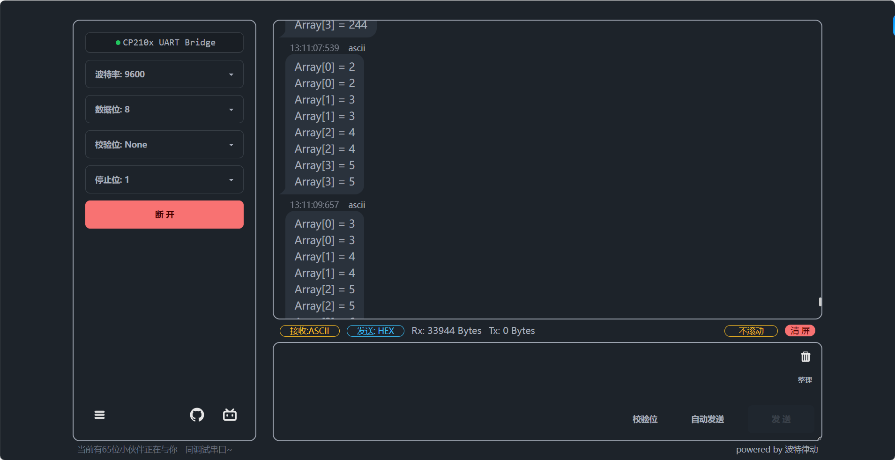
8.4.2 ADC单次转换扫描模式DMA转运¶
这里继续借鉴江协科技的图，我将两个电位计接在PA3和PA4，也可以节热敏电阻等可以测模拟量的传感器。

STM32CubeMX配置
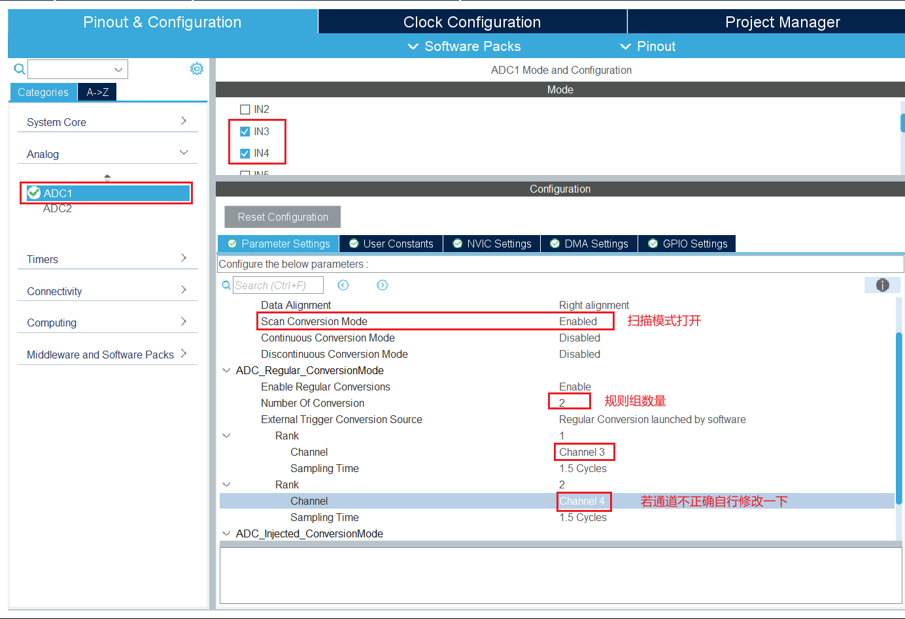
DMA设置，半字传输
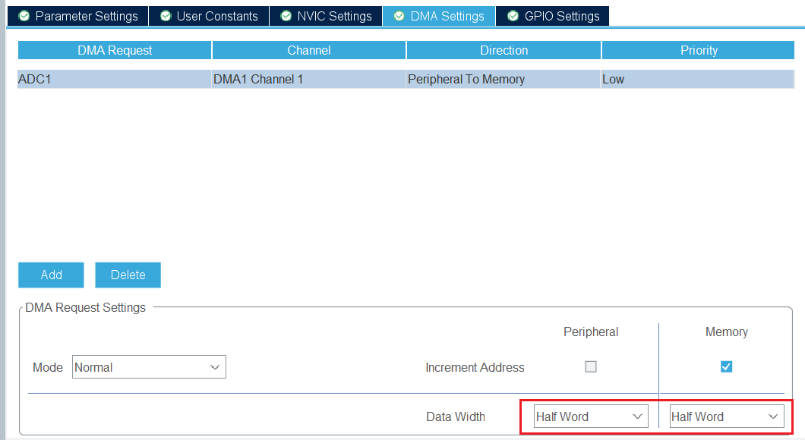
配置串口输出
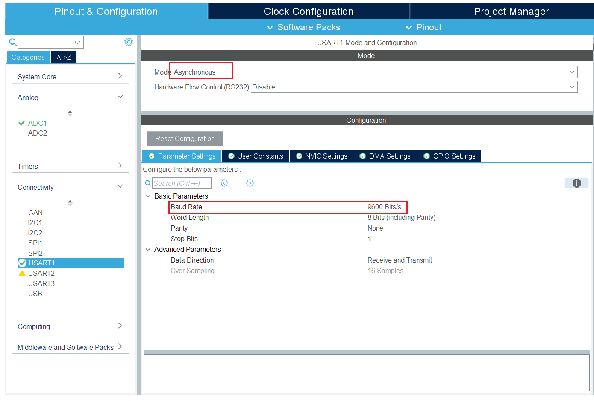
配置时钟
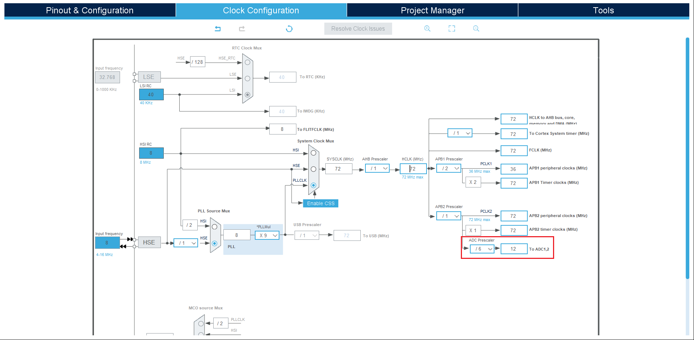
定义数据接收数组全局变量
在非连续模式下，一次ADC数据全部转换完成会触发中断，所以在 中断中读取数据 ：
/* USER CODE BEGIN 4 */
void HAL_ADC_ConvCpltCallback(ADC_HandleTypeDef *hadc) {
if (hadc == &hadc1) {
sprintf(buffer, "%d %d", values[0], values[1]);
HAL_UART_Transmit(&huart1, (uint8_t *)buffer, strlen(buffer), HAL_MAX_DELAY);
}
}
/* USER CODE END 4 */
主函数，调用ADC校准和开始，因为非连续模式， ADC开始放循环中
/* USER CODE BEGIN 2 */
HAL_ADCEx_Calibration_Start(&hadc1);
/* USER CODE END 2 */
/* Infinite loop */
/* USER CODE BEGIN WHILE */
while (1) {
HAL_ADC_Start_DMA(&hadc1, (uint32_t *) values, 2);
HAL_Delay(500);
/* USER CODE END WHILE */
/* USER CODE BEGIN 3 */
}
/* USER CODE END 3 */
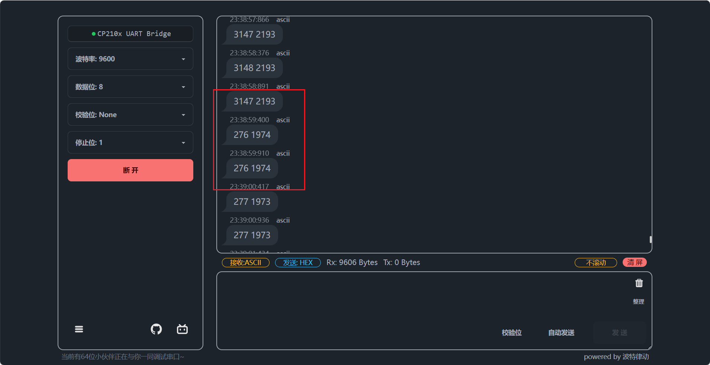
8.4.3 ADC连续转换扫描模式DMA循环转运¶
开启ADC连续模式，经测试这里需要把 采样时间提高 ，不然采不到数据。
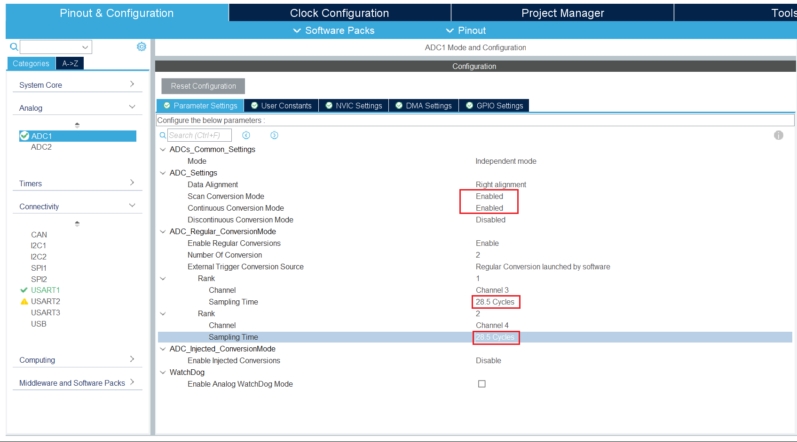
DMA循环模式，其余与上个工程一致
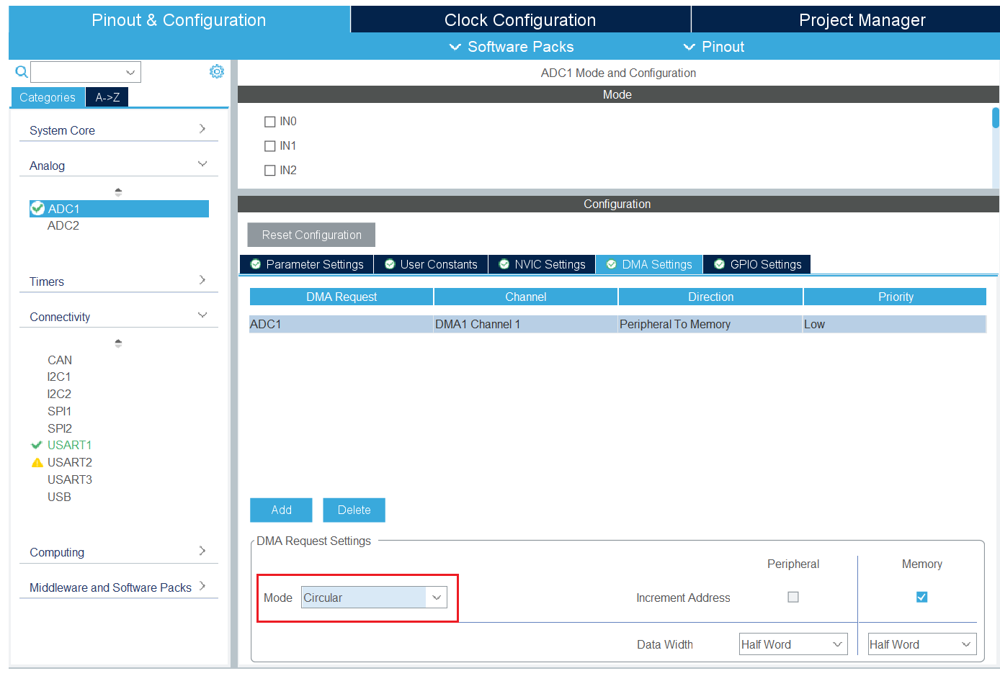
只需将ADC开始拿出循环，删除中断并把中断的程序放主循环，因为连续模式可以随时读取ADC值。
/* USER CODE BEGIN 2 */
HAL_ADCEx_Calibration_Start(&hadc1);
HAL_ADC_Start_DMA(&hadc1, (uint32_t *) values, 2);
/* USER CODE END 2 */
/* Infinite loop */
/* USER CODE BEGIN WHILE */
while (1) {
HAL_Delay(500);
sprintf(buffer, "%d %d", values[0], values[1]);
HAL_UART_Transmit(&huart1, (uint8_t *) buffer, strlen(buffer), HAL_MAX_DELAY);
/* USER CODE END WHILE */
/* USER CODE BEGIN 3 */
}
/* USER CODE END 3 */